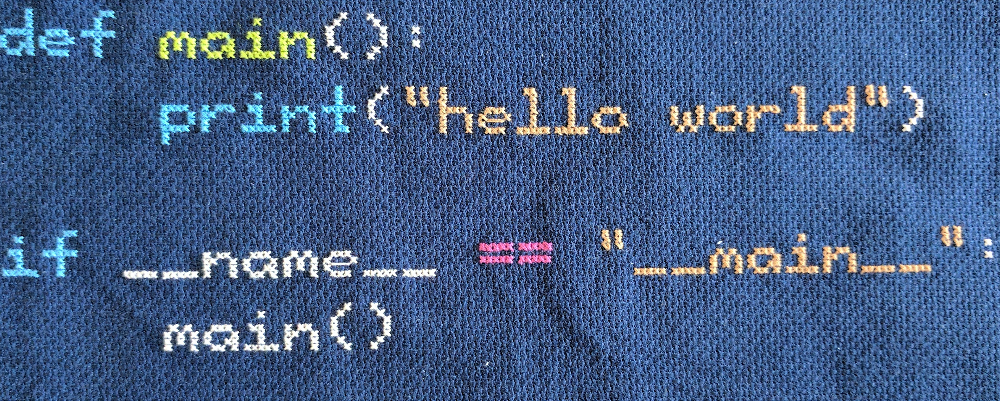
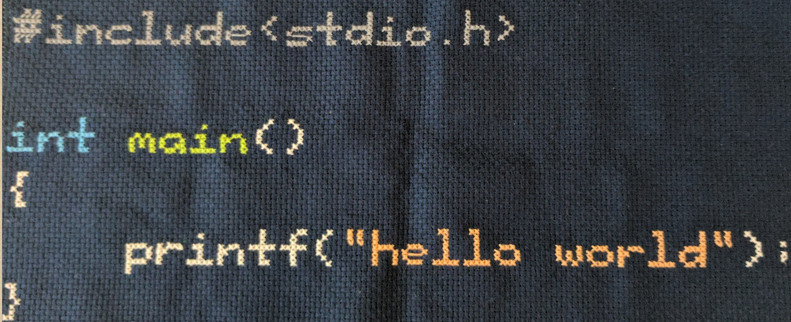
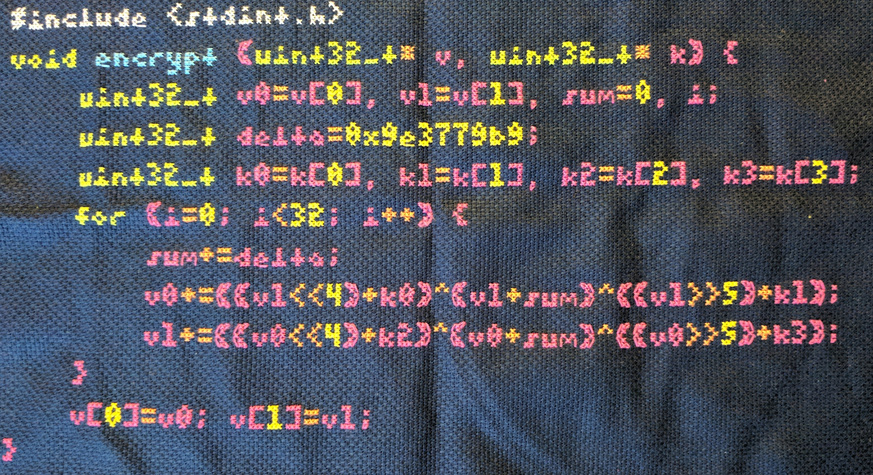

pyxstitch
pyxstitch is an application (and associated library/compenents) that takes source code files/text and can produce syntax-highlighted patterns for cross stitching
How does it work?
pyxstitch receives input (via file or stdin) and uses the awesome pygments library to get syntax/coloring information. From there it reads through the input token stream and uses pillow to handle image generation. Color codes are then passed off to a "closest" match RGB against the DMC floss colors (in 'floss.py'). This results in a grid-layout of stitching symbols and associated legend with color/symbol mappings.
Why?
There are some very useful applications (e.g. kxstitch) that can be used to generate patterns from images and even produce text blocks. But how do you take code/syntax highlighting and convert it? A screenshot of your editor and sending that into the application? Why not skip the clunky step and just pass code/flat files (with whitespace preservation) and have it handle the text layout for you without any strange mangling and some amount of consistency! Besides the examples below you can see more outputs here (as well as the fonts pyxstitch uses).Examples!
Hello World (python)
The following code fragment in pythonvim hello_world.py
---
def main():
print("hello world")
if __name__ == "__main__":
main()Just pass this into pyxstitch
pyxstitch --file hello_world.pyWhich produces a pattern that can be cross stitched into this! 
Hello World (C)
The following code fragment in Cvim hello_world.c
---
#include <stdio.h>
int main()
{
printf("hello world");
}Passed into pyxstitch
pyxstitch --file hello_world.cWhich produces a pattern that can be cross stitched into this! 
Tiny Encryption Algorithm (C)
The following algorithm in Cvim tea.c
---
#include <stdint.h>
void encrypt (uint32_t* v, uint32_t* k) {
uint32_t v0=v[0], v1=v[1], sum=0, i;
uint32_t delta=0x9e3779b9;
uint32_t k0=k[0], k1=k[1], k2=k[2], k3=k[3];
for (i=0; i<32; i++) {
sum+=delta;
v0+=((v1<<4)+k0)^(v1+sum)^((v1>>5)+k1);
v1+=((v0<<4)+k2)^(v0+sum)^((v0>>5)+k3);
}
v[0]=v0; v[1]=v1;
}Pass into pyxstitch
pyxstitch --file tea.c --font monospace-ascii-3x7Which produces a pattern that can be cross stitched into this! 